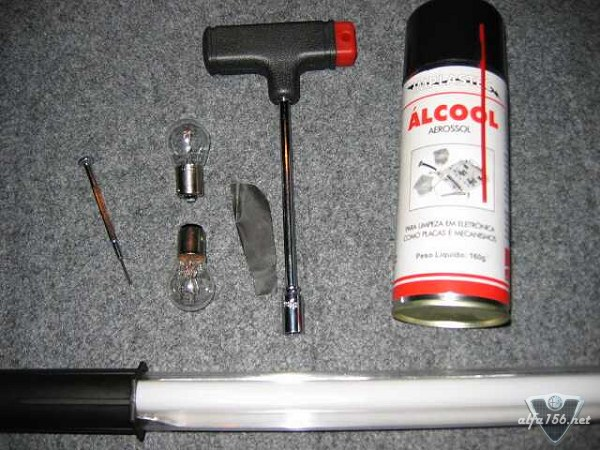
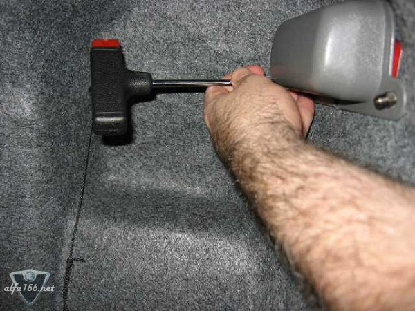
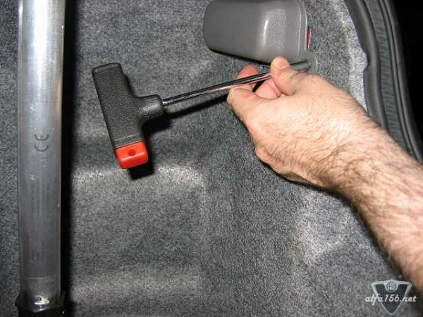
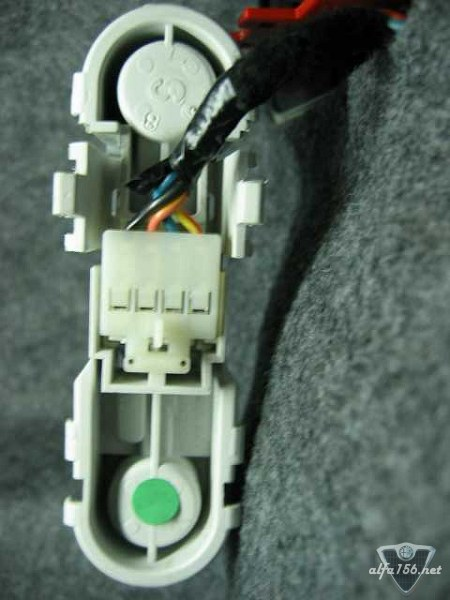
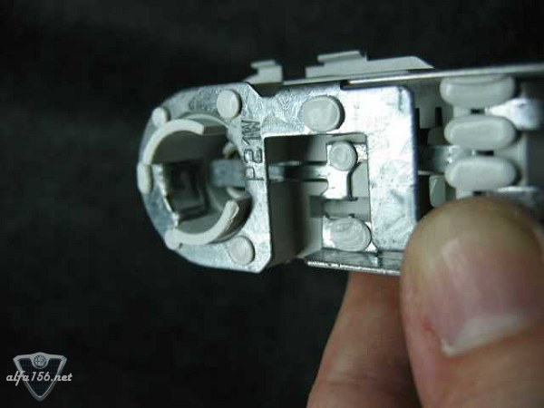
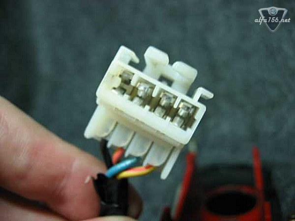
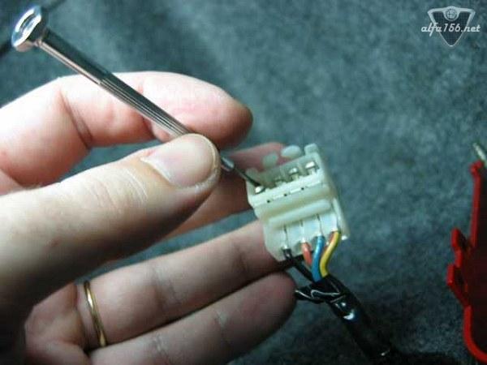
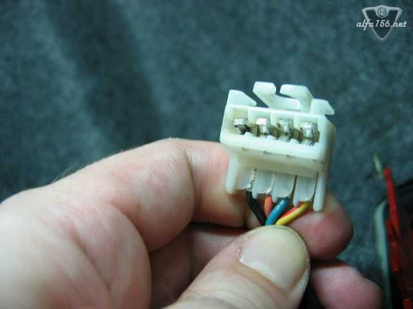

In my case, the blown bulb warning light used to blink occasionally
at the moment I applied the brake pedal, and sometimes when I turned on
the lights. I had already cleaned the contacts and changed the bulbs,
it did seem to work for a while but the problem came back again this week.
I knew the problem would be at the rear brake lights, so that's what I did
and what I found out:
Tools and materials: working lamp, 8mm Nut Driver, contact cleaner, small
screw driver, sand paper (fine) and two quality bulbs (optional if yours
are in good condition).

Unscrew the two nuts and remove the plastic protection to have access to the bulbs:


Remove the socket with the two bulbs by pressing gently the two levers:

Remove the bulbs from the socket by twisting them and clean the contacts with
the sand paper to remove oxidation:

Remove the connector from the back of the socket pressing gently the lever and
check the contacts:

You can see in the pic above that some of the contacts are way too open (the one
at the far left for instance) and THIS WAS THE CAUSE OF MY FALSE ALARM!
If that's the case, use a small screw driver to bend the contacts so they will
fit tighter:

It looked like this after tightening:

(I know, it doesn't look too straight! I guess I could have done a better job,
but that's good enough)
Now spray some contact cleaner on the connectors and contacts, reassemble
everything back and test.